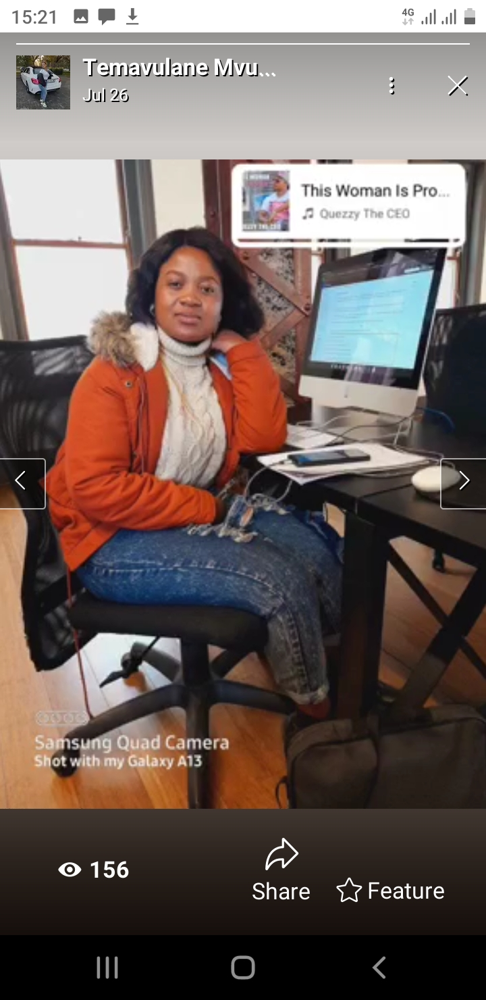

LINDOKUHLE NKOSI
I am Lindokuhle Nkosi an organized and flexible Management Assistant Graduate
who’s knowledgeable in Office Administration, Typing, and Secretarial functions.
My studies have equipped me with good attention to detail and communication skills,
and as a result, I can execute various admin tasks exceptionally well.
These tasks entail scheduling appointments and preserving calendars,
creating and maintaining filing systems electronically and physically,
writing and editing documents from letters to reports, and conducting other similar duties.
But sundenly i have grown love to the tech industry,
i want to persue a career as a Web developer and today is my first step towards this jouney.
I am so excited thanks codeTribe for such a wonderful experience...
AM SO READY!!!
|

|